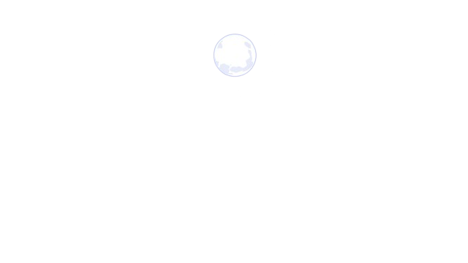
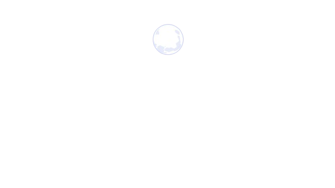
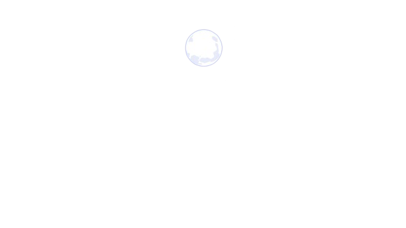
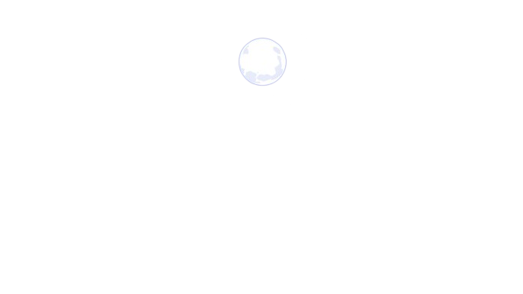

Hola
Presioname 

Hola, wow el 14, no soy bueno para ciertamente escribir esto, pero espero que te guste esto jasdjfasdf
quiero que sepas que te quiero mucho y eres de lo mejor que me ha pasado en la vida, me encantas, lo sabes. Pero sabes, espero algun dia
tener ciertamente "algo" contigo, aunque ya lo tenemos, solo quiero que sepas que estaré cuando me necesites, siempre te apoyaré.
Estaré para apoyarte y amarte y pues no sé, me encantas, no sabes lo mucho que significa para mí, que lo que siento sea correspondido, me gustas, hace mucho y lo sabes, pero realmente me enamoras cada día que pasa.
Realmente no sé cómo explicar como me siento cuando te veo, realmente no sé cómo eres tan linda, me encanta que seas como eres conmigo, tierna, cariñosa y también atrevida. Siempre haces que mis días, aunque el comienzo de ellos sea malo en las noches me tranquilizas y me haces saber que estarás conmigo para afrontar lo que viene, me encanta que seas esa persona especial para mí y aunque no sea bueno expresando mis sentimientos, quiero que sepas que te hice esto para ti Génesis, quiero ser para ti ese apoyo para tus momentos buenos y malos, quiero que seas feliz y si es conmigo yo estaré feliz.
Para terminar esto, quiero que sepas que eres la niña más linda que he visto en mi vida, solo espero que estemos mucho tiempo más juntos, porque realmente me tienes enamorado, yo enamorado, el que decía que no le iba a suceder eso, que le daba asco lo meloso, el que odiaba ver a las personas que estaban de melosos. Ahora solo quiero que esas personas seamos nosotros y que estemos bien.
Sé que no tengo mucho que ofrecer, pero quiero mejorar y estar bien para construir un futuro a tu lado, espero crecer juntos como personas, estar en las buenas y en las malas, aunque nos enojemos, peleemos, superar todos los obstáculos que nos ponga la vida, sé que no va a ser fácil, pero quiero que sea contigo porque contigo siento que puedo todo. Solo sé que te amo :)